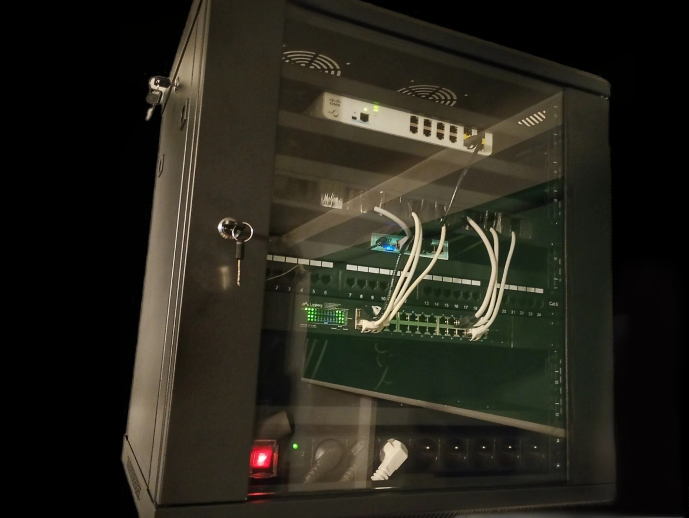
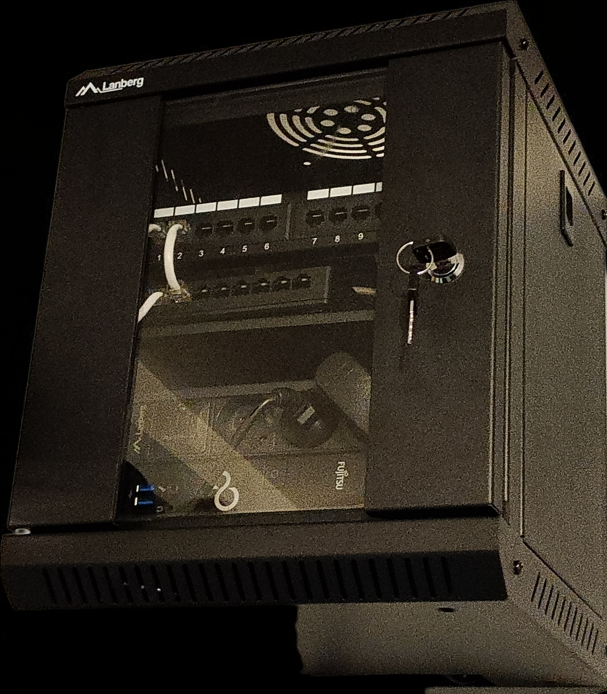

Cześć! Jestem uczniem technikum informatycznego, który teorię sprzętową i sieciową natychmiast przenosi do własnej serwerowni. Buduję energooszczędne środowisko serwerowe, przetestuję dystrybucje Linuksa oraz ustrukturyzowane sieci RACK.

Serce sieci. Zawiera router MikroTik hEX gr3, pasywny przełącznik zarządzalny Cisco Catalyst 2960C-8TC-L, 24-portowy gigabitowy switch Lanberg PoE+ (250W), listwę PDU z pomiarem energii Tuya/Smart Life oraz terminale serwerowe z aktywnym nawiewem.

Niezależna szafa dostępowa 10" obsługująca dodatkowe punkty dostępowe oraz poboczne połączenia kablowe na stanowisku.
Projekt DevLabStudy powstał jako przestrzeń do dokumentowania mojej nauki administracji systemami operacyjnymi, sieciami i sprzętem serwerowym.
Stawiam na optymalizację energetyczną – cała baza sieciowa w głównej szafie pobiera zaledwie ~33W, a do codziennej pracy używam energooszczędnego NUC-a zamiast prądożernego zestawu PC.
Akurat dopracowuję okablowanie oraz reorganizuję punkty Wi-Fi (przejście na Archera C6 v2 w trybie AP).
W najbliższych planach mam zamianę panelu LSA na modułowy Patch Panel 1U z 24 gniazdami Keystone oraz zastąpienie serwera HP 8200 USDT nowszym komputerem typu Tiny PC / NUC pod wirtualizację.